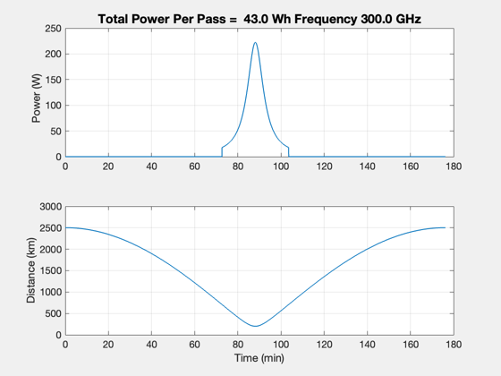
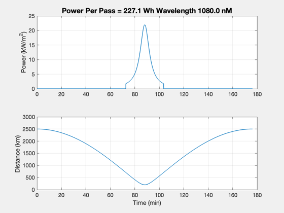

Pluto mission beamed power
Study beamed power to a Pluto lander.
See also Constant, Plot2D, TimeLabl, LaserPower, DBSignal, DBSignalToPower, AntennaGain, LossFreeSpace, Dot, Mag, RVOrbGen, Period
%-------------------------------------------------------------------------- % Copyright (c) 2015 Princeton Satellite Systems, Inc. % All Rights Reserved. %-------------------------------------------------------------------------- % Since 2016.1 %-------------------------------------------------------------------------- fD = 300; % GHz pT = DBSignal(100000); % dBW effT = 0.55; effR = 0.6; effL = 0.3; dR = 2; dT = 10; lambdaLaser = 1080; % nm powerLaser = 30e3; dLaser = 0.4; effLaser = 0.8; areaLaser = 4; gT = AntennaGain(struct('type','circular aperture','area',pi*dT^2/4,'eff',effR),fD); eIRPSL = pT + gT; gR = AntennaGain(struct('type','circular aperture','area',pi*dR^2/4,'eff',effR),fD); muPluto = Constant('mu pluto'); rPluto = Constant('equatorial radius pluto'); el = [rPluto+200 0 0 0 0 -pi]; p = Period(el(1),muPluto); [r,v,t] = RVOrbGen(el,linspace(0,p,10000),[],muPluto); rL = [rPluto;0;0]; uL = [1;0;0]; power = zeros(1,length(t)); rho = zeros(1,length(t)); powerL = zeros(1,length(t)); for k = 1:length(t) rho(k) = Mag(r(:,k) - rL); u = (r(:,k) - rL)/rho(k); if( Dot(u,uL) > 0 ) lFS = LossFreeSpace( fD, rho(k) ); power(k) = DBSignalToPower(eIRPSL - lFS + gR); powerL(k) = LaserPower( dLaser, lambdaLaser*1e-9, rho(k)*1000, powerLaser ); end end powerTotal = sum(power)*(t(2)-t(1)); [t,tL] = TimeLabl(t); s = sprintf('Total Power Per Pass = %5.1f Wh Frequency %4.1f GHz',powerTotal/3600,fD); Plot2D(t,[power;rho],tL,{'Power (W)','Distance (km)'},s) powerTotal = areaLaser*effLaser*sum(powerL)*(t(2)-t(1)); s = sprintf('Power Per Pass = %5.1f Wh Wavelength %4.1f nM',powerTotal/3600,lambdaLaser); Plot2D(t,[powerL/1000;rho],tL,{'Power (kW/m^2)','Distance (km)'},s) %-------------------------------------- % PSS internal file version information %-------------------------------------- % $Id: 3b7665d47e6c0aa63dcf0d8aa9d0c0ecac6b32cf $ 